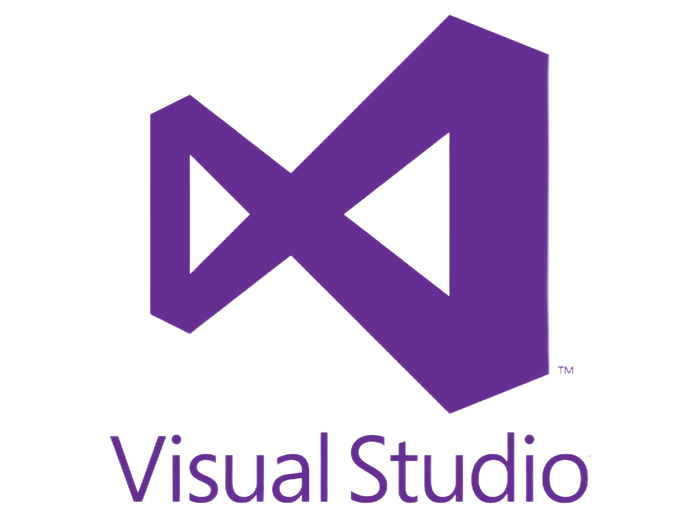
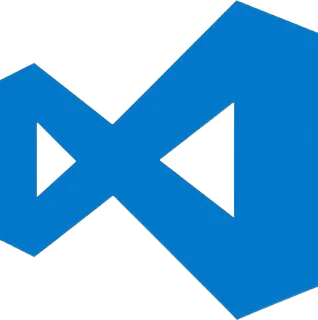

Visual Studio

Microsoft Visual Studio
— это интегрированная среда разработки.
Множество версий этой IDE способны создавать все типы программ, начиная от веб-приложений и заканчивая мобильными приложениями, видеоиграми.
Эта линейка программного обеспечения включает в себя множество инструментов для тестирования совместимости. Благодаря своей гибкости Visual Studio является отличным инструментом для студентов и профессионалов.
Visual Studio обладает всеми преимуществами IDE, включая удалённую отладку.
Из плюсов, платформа содержит:
Умное дополнение кода IntelliSense, чтобы ускорить процесс написания программ;
Инструменты для совместной работы: управление доступами и настраиваемые параметры редактора позволят писать код в едином стиле;
Интеграцию с Git;
Простое развёртывание благодаря встроенной интеграции с Azure.
Огромная коллекция всевозможных расширений, которая постоянно пополняется.
Возможность кастомизировать рабочую панель.
Поддержка разделенного экрана (split screen).
Из минусов можно выделить:
Тяжеловесность этой IDE. Для выполнения даже небольших правок могут потребоваться значительные ресурсы, поэтому если нужно выполнить какую-то простую и быструю задачу, удобнее использовать более легкий редактор.
Cтоимость: цены на лицензии Professional, предназначенные для профессиональных команд разработчиков, начинаются от 45 $ в месяц.
Корпоративная лицензия обойдётся в 1199 $ за первый год, продление — 799 $ в год. Есть бесплатная Community версия, но она имеет ограничения
Поддерживаемые платформы:
Windows/macOS
Официальный сайт для скачивания
Visual Studio Code

Microsoft Visual Studio Code
- это редактор кода, переопределенный и оптимизированный для создания и отладки современных веб- и облачных приложений. Это именно редактор, но при этом обладающий функциями IDE, полагающийся на расширения. Он позволяет писать код более чем на 72 языках и включает функции отладки..
Код Visual Studio бесплатен и доступен на любой платформе - Linux, macOS и Windows.
Из плюсов, платформа содержит:
Множество настроек (как всей программы, так и интерфейса);
Расширяемая библиотека дополнений и готовых решений;
Интеграцию с Git;
Мультифункциональность (редактор поддерживает почти все языки, используемые для создания приложений);
Огромная коллекция всевозможных расширений, которая постоянно пополняется.
Простота и гибкость.
Легковесность. Потребуется совсем мало ресурсов, чтобы приступить к работе с минималистичным VSC.
Полностью бесплатная
Из минусов можно выделить:
Низкая функциональность. Несмотря на поддержку .NET-платформы, VCS неудобен для сложных проектов.
Сомнительная надежность. Многие надстройки имеют низкое качество сборки и не всегда выполняют даже основные функции.
Поддерживаемые платформы:
Windows/macOS/LinuxOS
Официальный сайт для скачивания